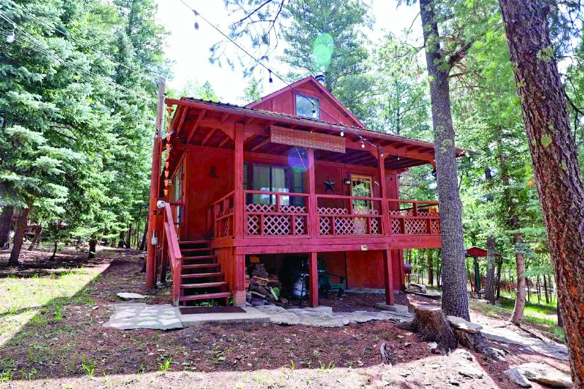
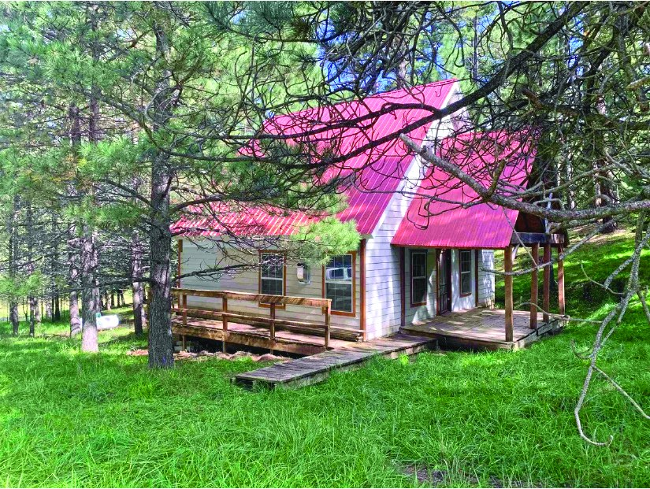
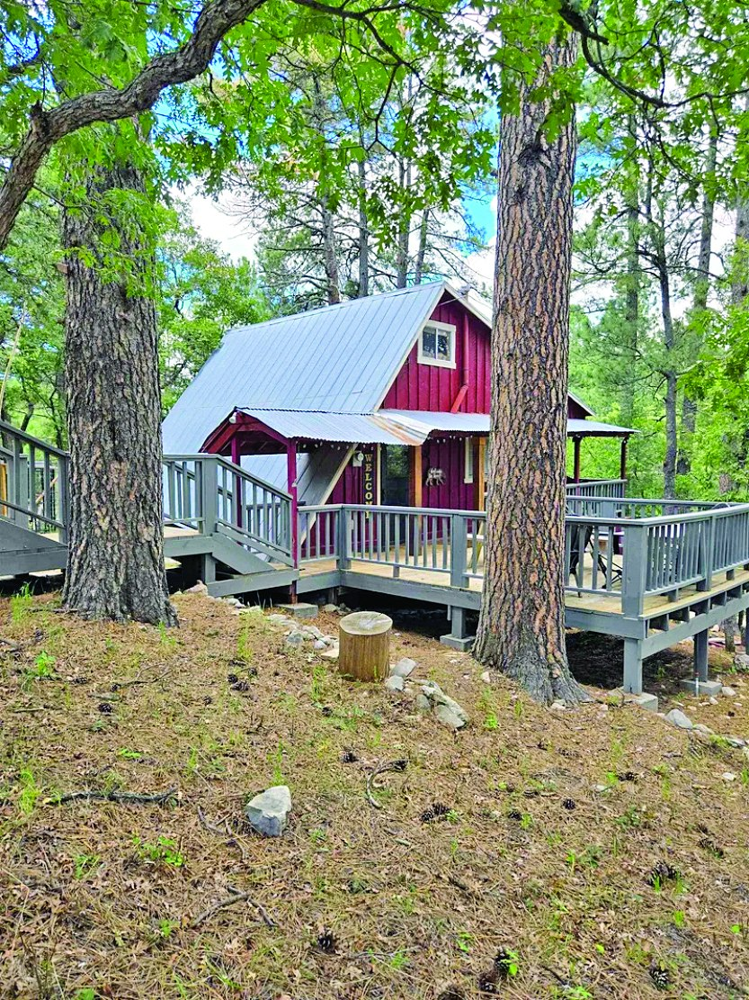
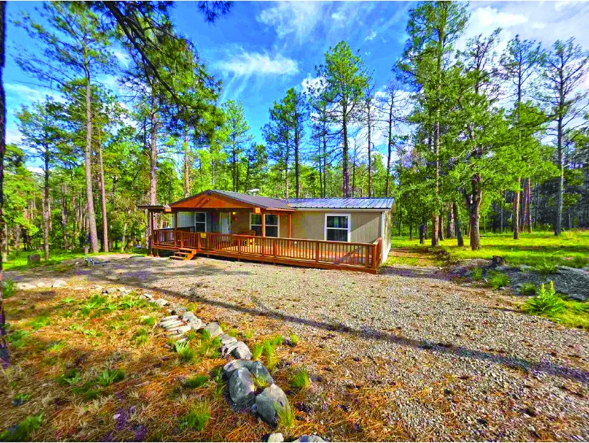

$239,000 3 Bedroom Property 3 bd · 1 ba MLS #172427
New Listing
2 Bedroom Property
$237,500
| Price | $237,500 |
|---|---|
| Status | New Listing |
| Bedrooms | 2 |
| Bathrooms | 2 |
| Living area | 1,100 sq ft |
| MLS # | 172611 |
| Listed by | Aspen Trails Realty |
| Print edition | October 2026 Otero County Edition, page 4 |
About this property
Mountain Home on a .312‑Acre Corner Lot - 2 bdrms, 2 baths & roughly 1,100 sq ft including a loft. Home is unfinished, offering a livable project w/room to complete interior finishes to your taste. Community water, Otero County Electric & standard septic system. Located in desirable Ponderosa Pines Subdivision, the structure was built from a modular foam‑panel kit known for strong insulation & energy efficiency. Interior framing is metal, ready for drywall or wood finishes. Once completed, value can be estimated with a CMA minus finish‑out costs. Seller is open to reasonable offers; expect roughly $50,000 more for completion.
Interested in this property?
Office phone: 575-682-7778
Aspen Trails Realty
Please contact the listing agent or company directly. The Real Estate Roundup is a publisher and does not show or sell properties.
Listing details and photo reproduced from the October 2026 print edition of The Real Estate Roundup (page 4), as printed. Prices and availability can change after publication — confirm with the listing agent.
More Homes
 $235,000
1 Bedroom Property in Cloudcroft
1 bd
Cloudcroft, New Mexico
MLS #173133
$235,000
1 Bedroom Property in Cloudcroft
1 bd
Cloudcroft, New Mexico
MLS #173133

$244,900 Property MLS #171609
$229,000 3 Bedroom Property in Timberon 3 bd · 2 ba Timberon, New Mexico MLS #172775 $229,000
29 Orchard Lp
3 bd · 2 ba
High Rolls, New Mexico
$229,000
29 Orchard Lp
3 bd · 2 ba
High Rolls, New Mexico
 $249,000
2 Bedroom Property in Cloudcroft
2 bd · 1 ba
Cloudcroft, New Mexico
MLS #172413
$249,000
2 Bedroom Property in Cloudcroft
2 bd · 1 ba
Cloudcroft, New Mexico
MLS #172413